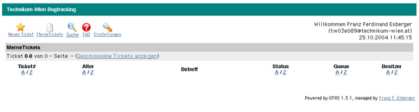
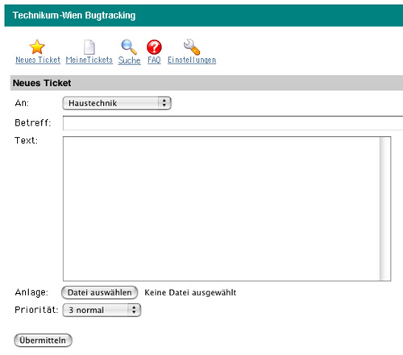
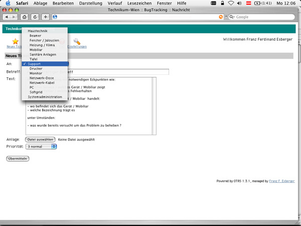
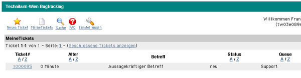
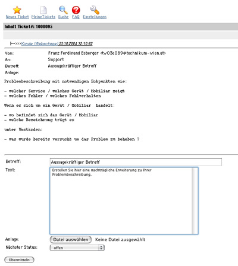
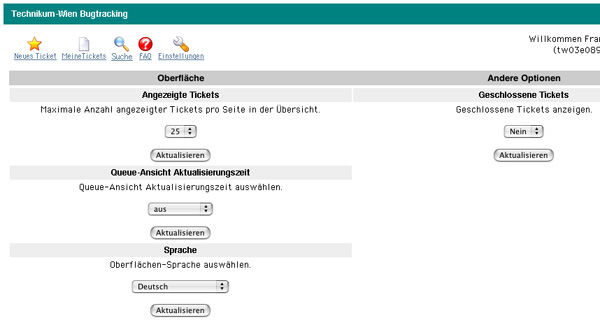

| |
| Dieses Dokument soll eine Kurzeinführung in die Benutzung unseres Trouble Ticketing (Bugtracking) Systems darstellen. Sollten Sie hier keine Antworten finden, melden Sie sich bitte bei ffe@technikum-wien.at. |
| |
| |
Was soll ich mir unter einem Trouble Ticket vorstellen ?
Wie erstelle ich ein Trouble Ticket ?
Neues Ticket - Formular
Neues Ticket - Ticketübersicht
Persönliche Einstellungen
|
| |
| |
| |
Trouble Tickets werden verwendet um dem IT-Service, der Haustechnik bzw. der Fernlehrabteilung Probleme zu melden.
Ein Trouble Ticket lässt sich im Wesentlichen mit einem Krankenblatt eines Patienten vergleichen.
Bei der erstmaligen Einlieferung im Krankenhaus wird dieses im Zuge der Anamnese neu angelegt.
Jeder Arzt trägt nun seine Diagnose, sowie die verordnete Therapie und Medikation ein und dokumentiert deren Erfolg.
Das Krankenblatt gibt nun einen schnellen Überblick, gewährleistet eine schnelle Einarbeitung und verhindert eine Mehrfachdosierung.
Ist die Krankheit besiegt und der Patient entlassen, wird das Krankenblatt archiviert.
Unser Trouble Ticket System funktioniert genauso wie das Krankenblatt, ein Problem durchläuft immer denselben Prozess:
Erfassung » Bearbeitung » Lösung » Archivierung
wobei der gerade aktuelle Status jederzeit durch Aufrufen der Oberfläche abgefragt werden kann.
Darüber hinaus werden Sie durch, vom System generierten, Mails automatisch über den aktuellen Stand Ihres Problems informiert.
|
|
| |
| |
| |
Klicken Sie auf der CIS Infrastruktur » Bugtracking an.
Sie sehen dann eine Oberfläche wie in Abbildung 1 vor sich.
Die Icons stellen die Navigation dar, unter dem Bereich "Meine Tickets" sind all ihre Tickets und deren aktueller Status aufgelistet.
Geschlossene Tickets, also Probleme die abgeschlossen wurden, werden bei einem Klick auf "Geschlossene Tickets anzeigen" sichtbar.
|  |
| Abbildung 1 (Zum Vergrössern klicken) |
|
|
| |
| |
| |
Durch einen Klick auf den Icon "Neues Ticket" öffnet sich ein leeres Formular wie in Abbildung 2 ersichtlich.
In der Auswahlbox "An:" wählen Sie bitte eine passende Kategorie für Ihr Problem. (siehe Abbildung 3)
Im Feld "Betreff:" führen Sie bitte einen Aussagekräftigen Betreff an.
Im Feld "Text:" tragen Sie bitte Ihre Problembeschreibung ein, diese sollte aus zumindest folgenden Eckpunkten bestehen:
- welcher Service / welches Gerät / Mobiliar zeigt
- welchen Fehler / welches Fehlverhalten
Wenn es sich um ein Service (ein Programm, Fernlehrumgebung, Mail, etc. ...) handelt:
- Von welchem Gerät aus versuchten Sie den Service zu nutzen (Standort, kurze Beschreibung zum verwendeten OS usw.)
Wenn es sich um ein Gerät / Mobiliar handelt
- Wo befindet sich das Gerät / Mobiliar
- Welche Bezeichnung trägt es
unter Umständen:
- Welche Schritte wurden von Ihnen zur Problembeseitigung / Lokalisation gesetzt ?
Wenn Sie alle Eingaben getätigt haben, klicken Sie auf "Übermitteln" um das Ticket zu erstellen.
|  |
| Abbildung 2 (Zum Vergrössern klicken) |
|  |
| Abbildung 3 (Zum Vergrössern klicken) |
Alternativ haben Sie die Möglichkeit ein Mail an support@technikum-wien.at zu verfassen, Mails an diese Adresse werden automatisch ins BugTracking System eingereiht.
|
|
| |
| |
| |
Nach der Erstellung eines neuen Tickets scheint dieses in der Rubrik "Meine Tickets" auf. (siehe Abbildung 4)
Durch einen Klick auf die Ticketnummer öffnet sich der Inhalt des Tickets.
Die Oberfläche wechselt in die Ansicht wie sie in Abbildung 5 ersichtlich ist.
In dieser Ansicht können Sie das komplette Geschehen rund um Ihr Ticket beobachten, dh. Sie können zu jedem Zeitpunkt einsehen, in welchem Status sich Ihr Problem gerade befindet.
Sollten Sie noch Detailinformationen hinzufügen wollen, so können Sie das ebenfalls in dieser Ansicht mit dem Formular am Seitenende (siehe Abbildung 5) tun. Sollte das Problem nicht mehr bestehen, haben Sie hier die Möglichkeit Ihr Ticket zu schliessen.
|  |
| Abbildung 4 (Zum Vergrössern klicken) |
|  |
| Abbildung 5 (Zum Vergrössern klicken) |
|
|
| |
| |
| |
Die Oberfläche bietet Ihnen unter dem Punkt "Einstellungen" verschiedene persönliche Einstellungsmöglichkeiten. (siehe Abbildung 6)
So können Sie Ihre Bugtracking Oberfläche nach Ihren Wünschen verändern.
|  |
| Abbildung 6 (Zum Vergrössern klicken) |
|
|